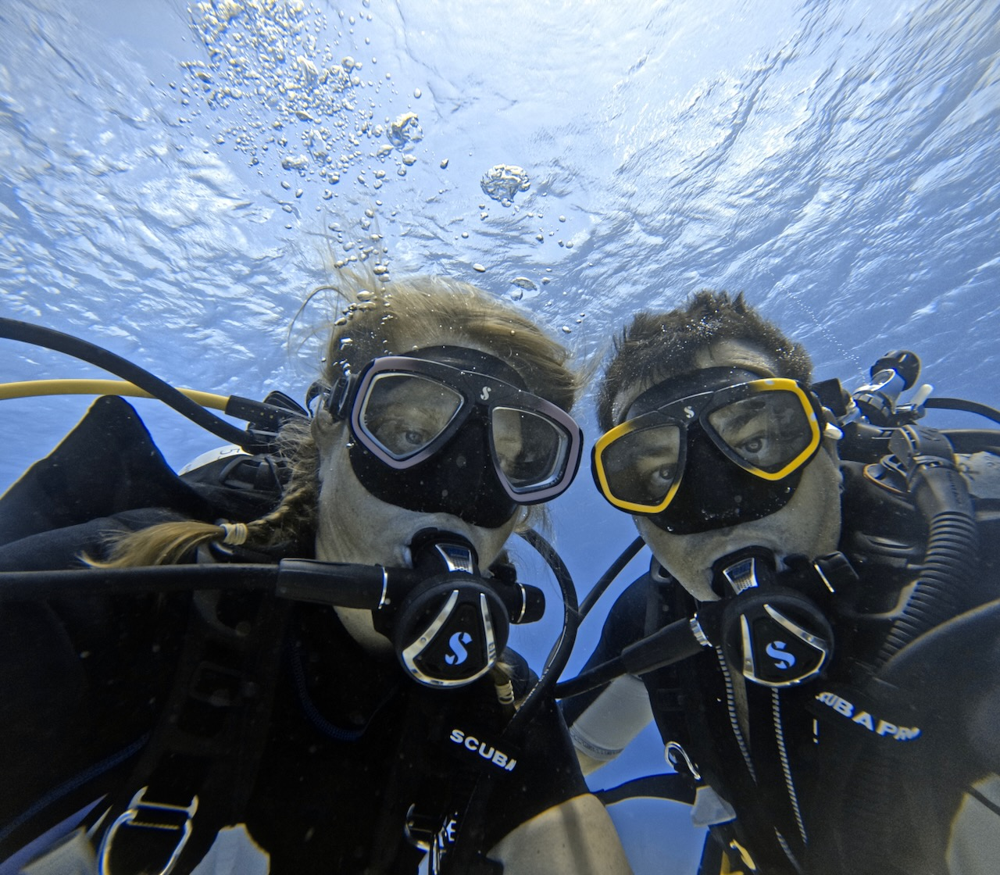
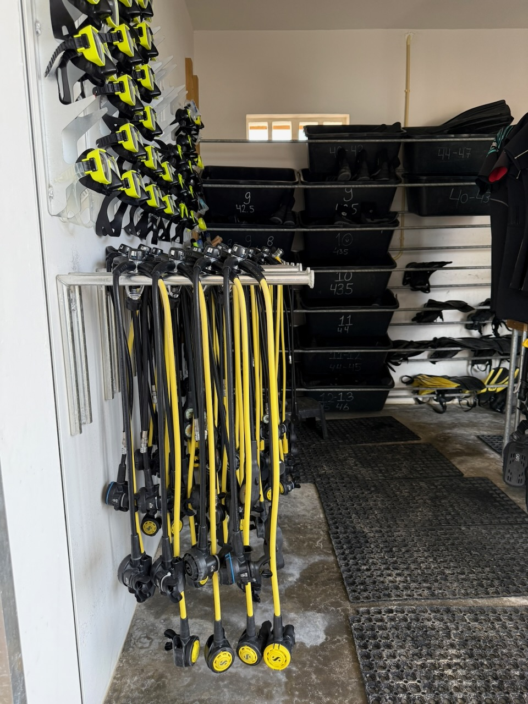
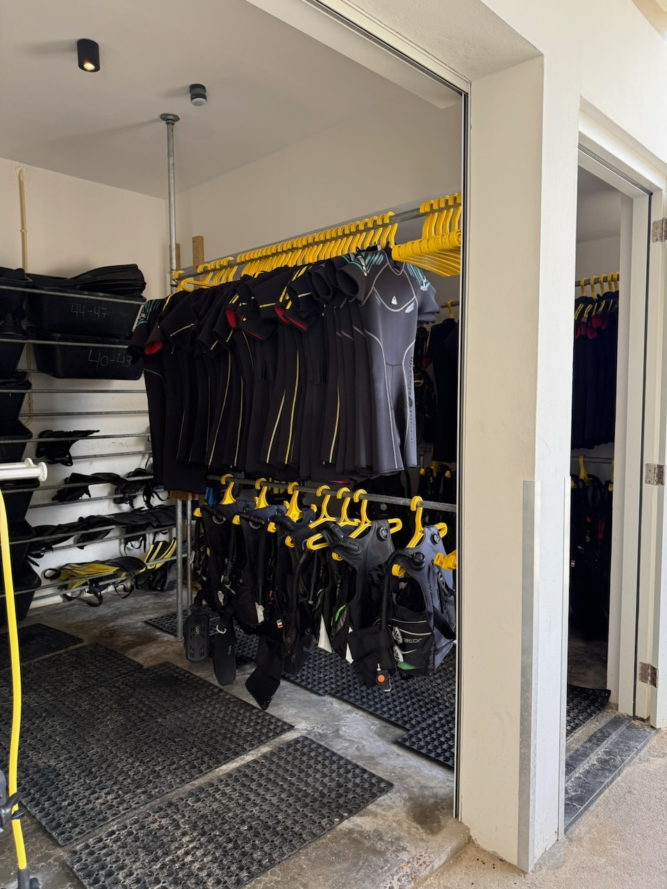
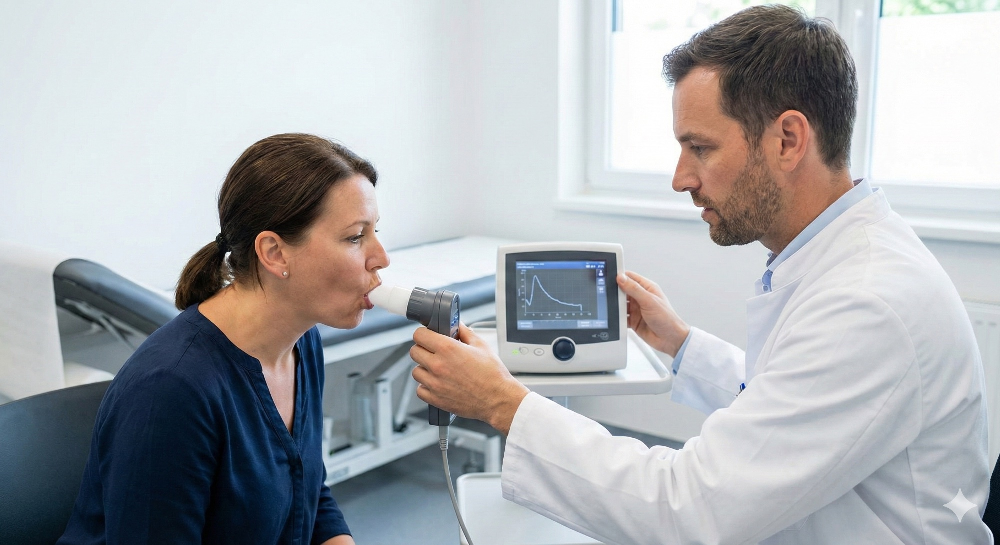
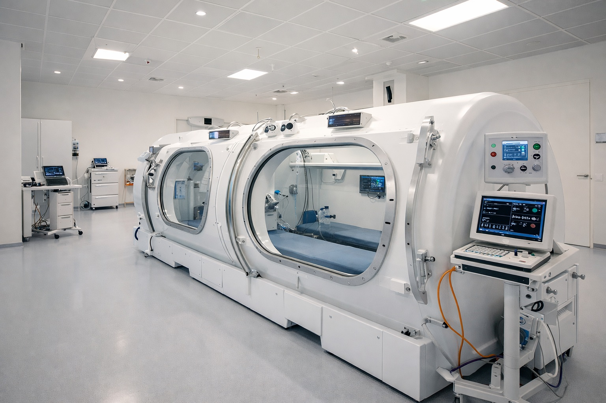
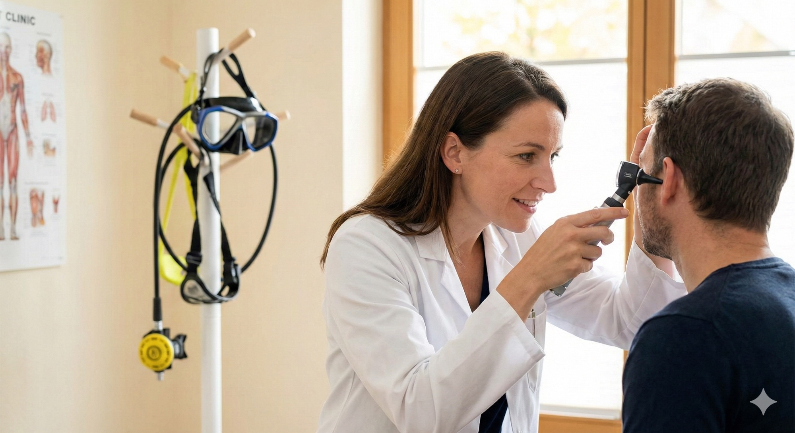
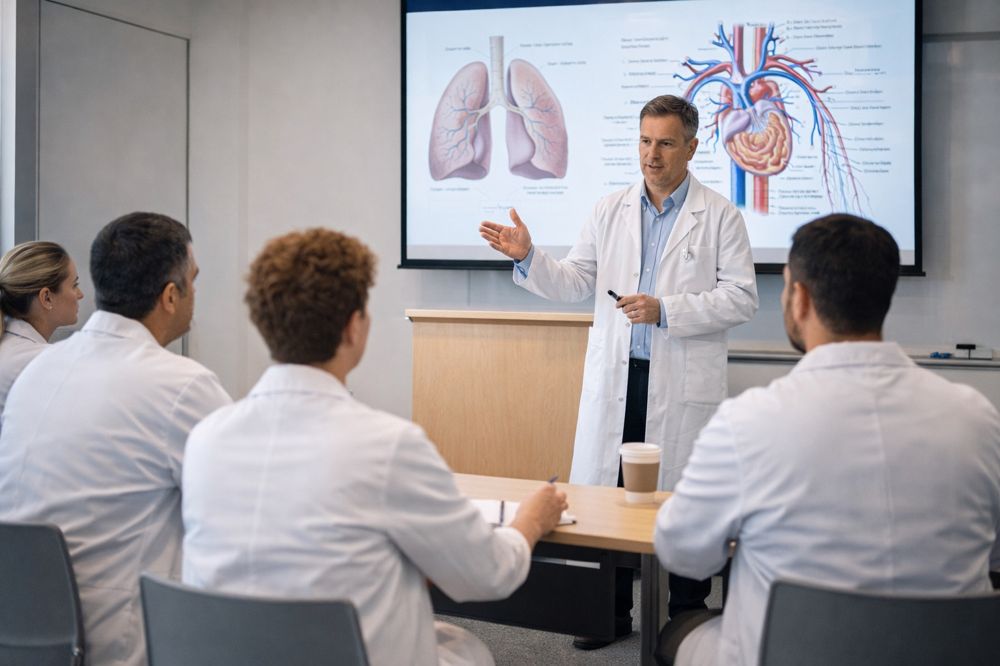
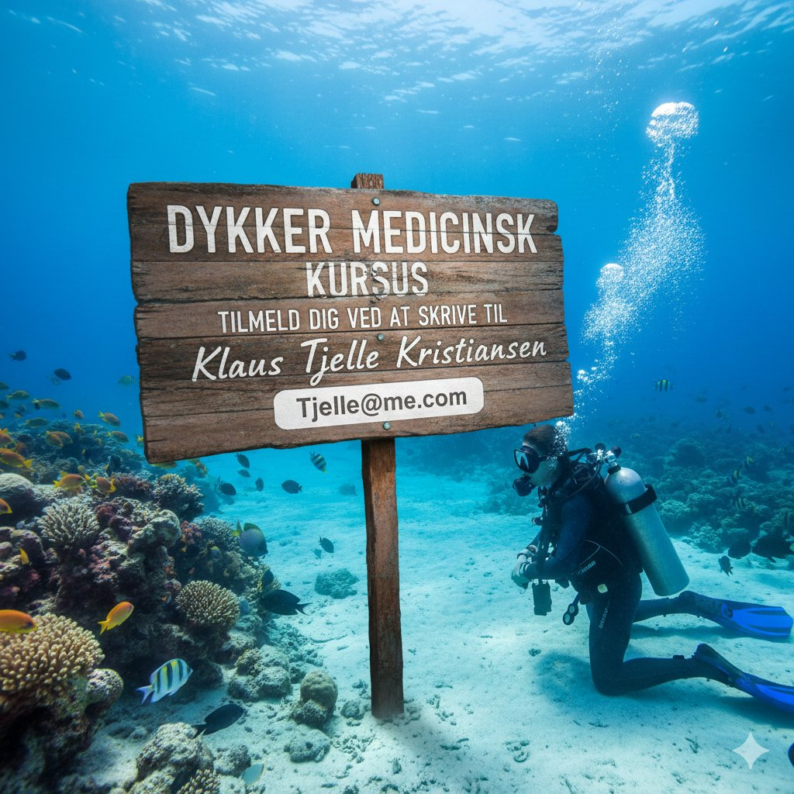

4 dages intensivt kursus på Rigshospitalet med erfarne klinikere. Bliv certificeret til at udføre dykkermedicinske undersøgelser og vurderinger.
Om kurset
Kurset giver dig de nødvendige kompetencer til at udføre "fitness to dive"-undersøgelser og rådgive om dykkermedicinske problemstillinger. Du lærer om alt fra trykrelaterede sygdomme til den praktiske vurdering af sportsdykkere og erhvervsdykkere.
EDTC-certificering: Kurset opfylder kravene fra European Diving Technology Committee (EDTC) og giver dig international anerkendelse som dykkerlæge.



25 timers undervisning i fysiologi, patofysiologi og kliniske aspekter af dykkermedicin.
Hands-on træning i undersøgelsesteknikker, spirometri og otoskopi specifikt for dykkere.
Gennemgang af reelle dykkerskader og træning i klinisk beslutningstagning.
Kursusindhold

Lær at udføre en komplet sundhedsvurdering af dykkere. Du får praktisk erfaring med:

Forstå patofysiologien bag trykrelaterede skader og lær at håndtere akutte situationer:

Gennemgang af særlige patientgrupper og udfordrende vurderinger:
Forventet program
Bemærk: Programmet er foreløbigt og rækkefølgen kan ændres.

Kursusledelse
Kurset ledes af et hold af erfarne klinikere med specialviden inden for dykkermedicin, hyperbar medicin og anæstesiologi.
Driftsansvarlig overlæge for trykkammerbehandling (hyperbar medicin) ved Rigshospitalet.
Særlige kompetencer: Trykkammerbehandling, højdefysiologi, dykkermedicinsk rådgivning.
Se forskningsprofil →Speciallæge og bestyrelsesmedlem i Dansk Flyve- og Dykkemedicinsk Selskab (DFDMS).
Særlige kompetencer: Dykkermedicinsk rådgivning, fitness to dive-vurderinger.
Se forskningsprofil →Overlæge i anæstesiologi ved Rigshospitalet og tilknyttet Institut for Klinisk Medicin.
Særlige kompetencer: Intensiv medicin, ECMO-behandling, anæstesiologi.
Se forskningsprofil →Speciallæge i almen medicin og ejer af Lægehuset Ferritslev på Fyn.
Særlige kompetencer: Almen medicin, sundhedsteknologi, formidling.
Besøg hjemmeside →Derudover deltager gæsteundervisere med specialviden inden for ØNH, kardiologi, lungemedicin, neurologi og Søfartsstyrelsen.
Praktisk
Skriv til nedenstående for at komme på venteliste.

Kurset arrangeres af Dansk Flyve- og Dykkemedicinsk Selskab (DFDMS)